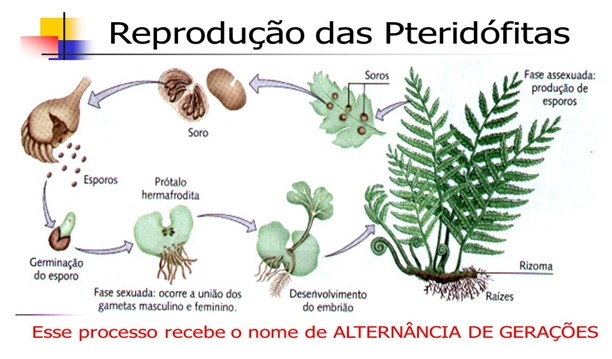

Pteridófitas!
São plantas um pouco mais elaboradas que as briófitas, porém ainda são bem simples, conhecidas como "Samambaias" e "Samambaiaçu"
Características:
- Vasos Condutores
- Possuem vasos condutores de seiva, ou seja, tem xilema e floema.
- Tecidos Verdadeiros
- Possuem tecidos verdadeiros, como caule, folha e raiz.
- Plantas simples
- Não têm flores, sementes ou frutos.
- Dependências
- Possuem vasos condutores, mas ainda depende da água para reprodução.
Organização Corporal
A sua parte mais duradoura é o esporófito que apresenta um caule subterrâneo chamado rizoma. Dele, brotam raízes e folhas, folhas essas, que possuem muitos folíolos repletos de soros e dentre os mesmos há o esporângio, que é a célula que produz esporos por meiose.
Reprodução
O esporo liberado pelo esporângio germina e origina o gametófito monóico que é dotado de anterídeo, parte da planta que produz anterozóide flagelado para a reprodução. Como já dito aqui, essa planta precisa de água para a reprodução para que o anterozóide se desloque até a oosfera gerando assim a fecundação que forma o embrião dessa planta.